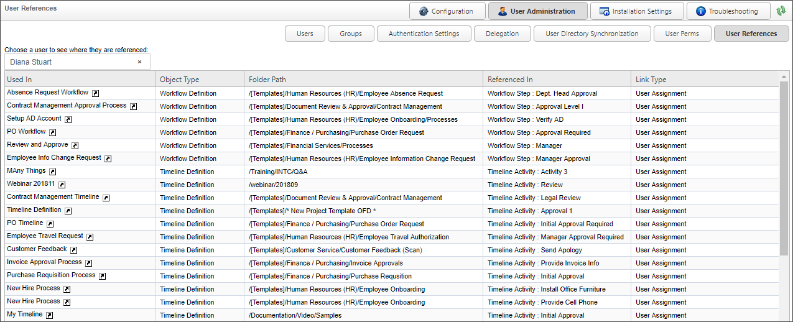

For Process Director v5.12 and higher, administrators have the ability to find all references in the system for a particular user from the User References page.

To see all of the objects that reference a user, simply select the desired user from the Choose a user to see where they are referenced User Picker. Once you select the user, the references will automatically be retrieved and listed in a bottom part of the page.